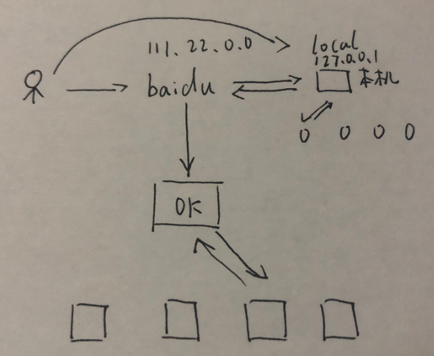
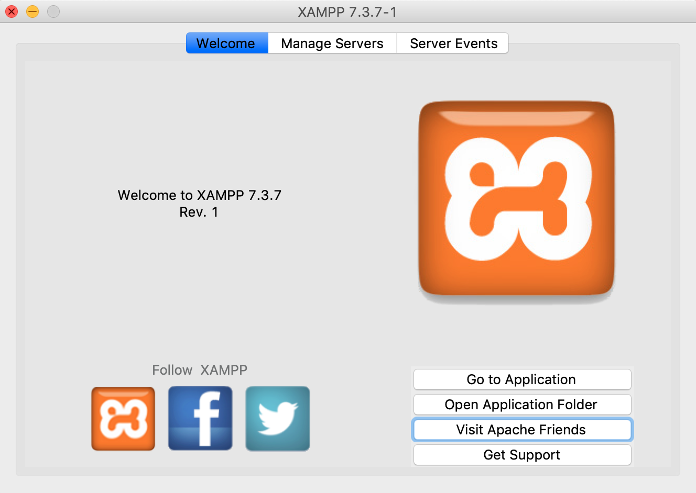
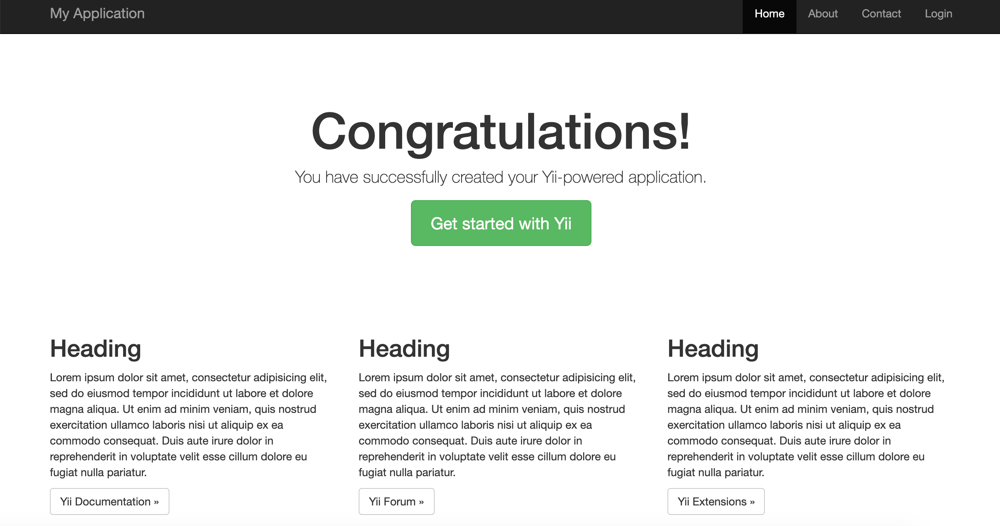
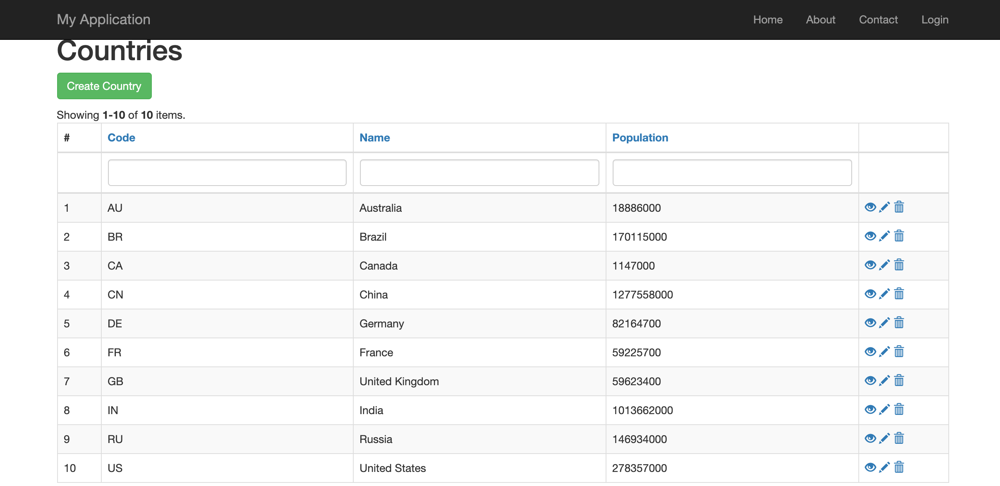

# 工具的安装
# 1.Web服务器基础原理及概念
首先为什么要了解web服务器呢，我们作为web前端开发，早晚要接触到后端，现阶段from表单要有一个提交的位置，提交的东西一定要是一个动态的文件。 谁来支持这样一个动态文件，以及怎么把这些东西部署到服务器上，这些都是需要web服务器支持的。  这里来介绍一下原理，（如图）比如平时我们访问百度，作为一个用户访问，需要几个步骤，首先，输入百度这样一个网址，浏览器就是我们输入网址的一个软件，当我们输入完网址，浏览器就会去请求这个网址，这个百度就有一个类似于身份证号（唯一）的地址，然后把最近的一台服务器给你，达到最快的访问速度，在这样一台服务器下面还用很多小机器，这些小机器可能是1台，100台，200台这样，分布到全国各地， 这台主机器就会去查询当前占用资源最少的那台机器，然后进行访问，这台机器要有一个相应，然后主机再把数据返回给用户。这样整个一个流程就算结束了。 在刚开始学习时，我们可能只接触到一台机器，就是自己的电脑，本机本身也有一个域名，叫localhost，它也有类似于身份证的地址，126.0.0.1，当你访问它，它马上就会给你一个响应，这就是服务器的基本概念。 之前学习的from表单，一定会有一个提交的地址，这台机器上就会有一静态文件，所以要先会搭建这样一台台机器，在把页面放进去。
# 2.安装xampp
为了学习Apache，首先安装xampp。 下载地址 (opens new window)
https://sourceforge.net/projects/xampp/files/XAMPP%20Mac%20OS%20X/7.3.7/
一路next，到这个界面，就说明安装成功 
# 3.Linux环境
# 安装CentOS和虚拟机VMware
- 首先安装虚拟机
- 在官网上vmware (opens new window)，先注册个账号,如果是windows就下载Workstation Pro版本，mac就下载Fusion 版本。然后一步步安装。
- 下载CentOS
- 同样是在官网上CentOS下载 (opens new window)，DVD版本是有一些图形界面的，一般比较小巧的就安装mini版。
- 安装CentOS
- 打开虚拟机，把CentOS拉进去安装，配置一下root密码，然后稍等就安装成功了。页面就变成像终端一样的界面，然后输入用户名root，密码。
# 查看虚拟机ip地址
ip addr //可能不一样,查看ens33 里inet后面跟着的就是。
这里有可能需要激活网卡，步骤：
- 1.vi /etc/sysconfig/network-scripts/ifcfg-ens33
- 2.按“i”键进入编辑状态，将最后一行ONBOOT的“no”修改为“yes”，然后按“ESC”键退出编辑状态，并输入“:x”保存退出。
- 3.输入“service network restart”重启服务
- 4.ip addr
ip地址获取成功后，在mac终端上输入ssh root@ip地址，就可以跟虚拟机连上了。
# Linux里安装nodejs
- yum安装方法
# 添加官⽅方的yum源
curl -sL https://rpm.nodesource.com/setup_12.x | bash -
# yum命令安装
yum install -y nodejs
# 查看安装的版本
node -v
2
3
4
5
6
复制文件到Linux上
登录远程 ssh root@ip地址
mkdir test
cd test/
新控制台，在本地, scp 复制文件的路径 root@ip地址:/root/test (对应上面新建的目录) 在CentOS上装samba
yum install samba -y
修改samba配置文件 /etc/samba/smb.conf （共享目录）
# 4.PHP的框架 Yii
# 安装Yii
在yii官网下载basic模版，本地用xampp。 通过归档文件安装 通过归档文件安装 Yii 包括三个步骤：
- 从 yiiframework.com 下载归档文件。
- 将下载的文件解压缩到 Web 访问的文件夹中。
- 修改 config/web.php 文件，给 cookieValidationKey 配置项 添加一个密钥（若你通过 Composer 安装，则此步骤会自动完成） 把模版放到hdocs里，本地起服务。
可能会遇到权限问题 先 ps aux 查看进程的所有者。让进程和basic模版的用户一致后修改权限。
解决办法：
1、cd /Application/xampp/htdocs/projectname/web/
2、sudo chmod -R 755
如果没有问题，安装完后 cd /Applications/XAMPP/xamppfiles/htdocs/basic ，到模版basic目录，php yii serve。 出现如下页面，说明安装成功。  跟着官网一步步敲代码，其中只有两次权限问题，其他都比较顺利，用Gii完成一个表格增删改查的功能 
# 5.持续集成
# 安装jenkins
在安装jenkins之前，要先确保安装JDK8，在官网下载相应版本的，然后安装。安装完后，再进行jenkins的下载。 这里，jenkins的官网mac版本下载有些问题，所以我下载jenkins.war包。
- cd 到jenkins.war包目录
- java -jar jenkins.war --httpPort=8088 启动
PHP →